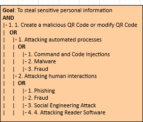
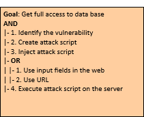
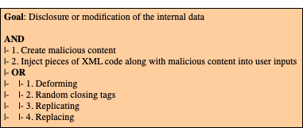
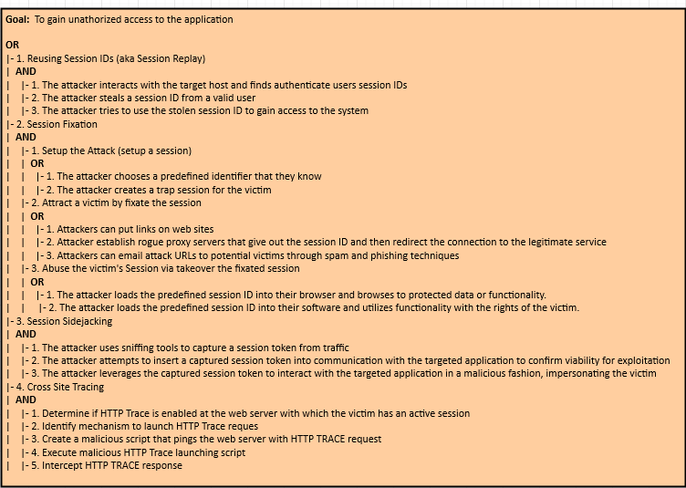
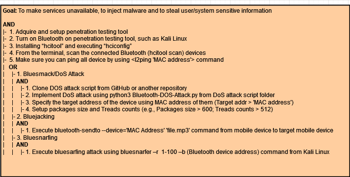
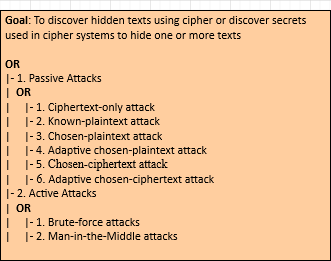
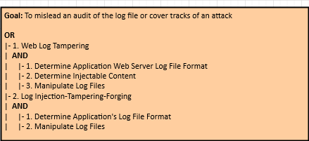
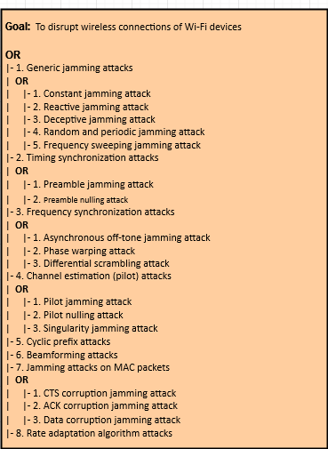
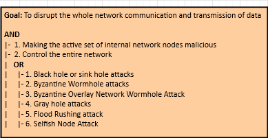

| Mobile Platform | Hybrid Application |
| Application domain type | m-Payment |
| Authentication | Yes |
| Authentication schemes | Biometric-based authentication ; Factors-based authentication ; ID-based authentication |
| Has DB | Yes |
| Type of database | SQL (Relational Database) |
| Which DB | MySQL |
| Type of information handled | Personal Information ; Confidential Data ; Critical Data |
| User Registration | Yes |
| Type of Registration | The users will register themselves |
| Programming Languages | HTML5 ; Javascript |
| Input Forms | Yes |
| Upload Files | Yes |
| The system has logs | Yes |
| The system has regular updates | Yes |
| The system has third-party | Yes |
| System Cloud Environments | Community Cloud |
| Hardware Specification | Yes |
| HW Authentication | Basic Authentication (user/pass) |
| HW Wireless Tech | 3G ; 4G/LTE ; 5G ; Bluetooth ; Wi-Fi ; GPS ; NFC |
| Data Center Phisical Access | Yes |
In this type of attack, one of the strategies used by the attackers, after coding the malicious links, is to take them to phishing sites or execute fraudulent codes. In addition, in order to end this type of attack, the attackers often print the malicious QR codes on small stickers that are pasted on pre-existing QR codes. On the other hand, attackers often change selected modules from white to black and vice versa in order to replace the original encoded content.
QR code-based attack is defined as an attack that attempts to lure victims into scanning a QR code that directs them to malicious websites. The key idea behind QR code attacks is that victims might trust the web page or the printed material on which the QR code is displayed, and assume that the associated code is harmless. In addition, attackers use malicious QR codes to direct users to fraudulent web sites, which masquerade as legitimate web sites aiming to steal sensitive personal information such as usernames, passwords or credit card information.
To ensure that the mobile application is resilient or immune to malicious QR Code attacks, it is recommended that the measures described in the good practice report and the security tests present in the full report are followed to ensure authenticity, integrity and authenticity of the data.

In this type of attack, an attacker could provide malicious input with a clever mix of characters and meta characters from a form (e.g., login form) to alter the logic of the SQL command.
Structured Query Language (SQL) Injection Attack is a code injection technique commonly used to attack web applications where an attacker enters SQL characters or keywords into an SQL statement through superuser input parameters for the purpose to change the logic of the desired query.
To ensure that the mobile application is resilient or immune to SQLi attacks, it is recommended that the measures described in the good practice report and the security tests present in the full report are followed to ensure authenticity, confidentiality, access control, integrity, privacy and authenticity of the data.

Flooding is an enhanced Denial of Service (DoS) attack type, originating from multiple network attack surfaces that were previously compromised to disrupt the services or resources provided by the target server. It differs from DoS in that it generates more traffic, so that the targeted server cannot handle requests. This type of attack generally exposes a weakness in rate limiting or flow.
The Flooding attack attempts to make a service unavailable to intended users by draining the system or network resource. Attackers can now launch various DDoS attacks, including resource-focused attacks (eg, network bandwidth, memory, and CPU) and app-focused attacks (e.g., mobile applications, database service) from almost every attack places. This type of attack can be executed as follows:
In order to ensure that the mobile application is resilient or immune to the Flooding attacks, it is recommended that the measures described in the good practice report and the security tests present in the full report are followed.
It is an attacking technique used against XML-based applications to modify or compromise their normal operation.
XML Injection (XMLi) attacks are carried out by injecting pieces of XML code along with malicious content into user inputs in order to produce harmful XML messages. The aim of this type of attacks is to compromise the system or system component that receives user inputs, making it malfunction (e.g. crash), or to attack other systems or subsequent components that process those injected XML messages. This type of attack can be classified into 4 categories:
To ensure that the mobile application is resilient or immune to Spoofing attacks, it is recommended that the measures described in the good practice report and the security tests present in the full report are followed to ensure authenticity, integrity, privacy and authenticity of the data.

An attacker impersonates a legitimate user through stealing or predicting a valid session ID.
The necessary condition for the session hijacking attack to occur is the existence of architectural vulnerabilities in the absence of protection for the storage of session identifiers. This vulnerability generally occurs in web applications written in PHP in previous versions (e.g., PHP 4.0 to PHP 4.1.2), As described in CVE-2002-0121.

In a nutshell, spoofing attacks consist of spoofing the caller ID in order to impersonate a trusted entity and thus obtain confidential information in a disguised manner.
In this type of attack, the attacker can spoof the "Caller ID" and impersonate him as a legitimate user, i.e., an attacker could spoof the "Caller ID" and impersonate a trusted party. Recent studies have also shown how to spoof MMS messages that appeared to be messages from a number that operators use to send alerts or update notifications. In addition, base stations can also be counterfeited. On the other hand, there is also the mobile application spoofing attack, which consists of an attack where a malicious mobile application mimics the visual appearance of another one. The goal of the adversary is to trick the user into believing that she is interacting with a genuine application while she interacts with one controlled by the adversary. If such an attack is successful, the integrity of what the user sees as well as the confidentiality of what she inputs into the system can be violated by the adversary.
To ensure that the mobile application is resilient or immune to Spoofing attacks, it is recommended that the measures described in the good practice report and the security tests present in the full report are followed to ensure authenticity, integrity, privacy and authenticity of the data.

A malicious user can start or redirect the migration process to a different network in which he has access or untrusted host, or it can just be copied and used elsewhere, which compromise the VM with the passwords, credentials on it and in case of coping it makes it difficult to trace the attacker.
VMs roll back to their previous state if an error occurs. Unfortunately, this factor can re-expose them to security vulnerabilities, and attackers can gain benefit to attack on this compromised hypervisor. It is important to protect the data during migration. In fact, this is the defending of data privacy and integrity from various network attacks during migration. Live migration might be susceptible to many attacks like ”man-in-the-middle”, ”denial-of-service” and ”replay. The data during the migration can be sniffed or tampered easily as it is not encrypted.
To ensure that the mobile application is resilient or immune to VM Migration attacks, it is recommended that the measures described in the good practice report and the security tests present in the full report are followed to ensure authenticity, integrity, privacy, confinement, and authenticity of the data.

This type of attacks ocurre when there is a malicious entity (client, employee, Hypervisor, Cloud Provider/Broker, etc.) takes advantage of its privileges to covertly carry out any malicious activity such as information theft and data destruction or physical infrastructures.
Malicious Hypervisor, Malicious Clients, Malicious Cloud Provider/Broker, etc. are all the other terms which can also be used as an alternative to malicious insiders. This kind of attack occurs from client to server when the person, employee or staffs who know how the system runs, can implant malicious codes to destroy everything in the cloud system.
In order to ensure that the mobile application is resilient or immune to Malicious Insiders attacks, it is recommended that the measures described in the good practice report and the security tests present in the full report are followed.

This type of attack occurs when an application escapes from the VM and gains control of VMM, as it escapes the VM privilege and obtains the root privilege.
VM escape is where an application running on a VM can directly have access to the host machine by bypassing the hypervisor, being the root of the system it makes this application escape the VM privilege and gain the root privilege. In this type of attack the attackers attempt to break down the guest OS in order to access the hypervisor or to penetrate the functionalities of other guest OS and underlying host OS. This breaking of the guest OS is called as escape. If the attackers escapes the guest OS it may compromise the hypervisor and as a result it may control over the entire guest OS. In this way the security breach in single point in hypervisor may break down all the hypervisor. If the attacker controls the hypervisor, it can do anything to the VM on the host system.
To ensure that the mobile application is resilient or immune to VM Escape attacks, it is recommended that the measures described in the good practice report and the security tests present in the full report are followed to ensure authenticity, integrity, privacy, authenticity and confinement of the data.

It is a type of attack enabled by leakage of information from a physical cryptosystem.
Side-channel attacks use statistical models such as differential analysis and correlation analysis on the information leaked from the cryptographic device during runtime. While early attacks required attackers to be in physical possession of the device, newer side-channel attacks such as cache-timing attacks or DRAM row buffer attacks are conducted remotely by executing malicious software in the targeted cloud environment. Regarding smartphones/tablets, they have developed more sophisticated side-channel attacks that target the built-in sensors of these devices, allowing them to infer keyboard input on touchscreens through sensor readings of native applications and websites, infer a user's location by the power consumption available in the proc file system (procfs), and infer a user's identity, location and diseases through procfs.
In order to ensure that the mobile application is resilient or immune to the side-channel attacks, it is recommended that the measures described in the good practice report and the security testing present in the full report are followed.

In this type of attack an attacker preforms physical modifications on the hardware where the software is implemented.
This type of attack occurs whenever an unauthorized user has physical access to the device. When this access is realized, it is possible to loss, leakage, access or unintentionally disclose of the data or applications to unauthorized users, if the mobile devices are misplaced, lost or theft.
To ensure that the mobile application is resilient or immune to malicious Tampering attack, it is recommended that the measures described in the good practice report and the security tests present in the full report are followed to ensure authenticity, integrity, privacy and authenticity of the data.

These are DDoS-type attacks that target a Bluetooth wireless network in order to shut down activity on it. It usually occurs through an attack coming from a connection of malicious entities in a target network.
Bluejacking occurs by sending unsolicited messages between the mobile devices (host nodes) over the Bluetooth connection. The unauthorized information can be accessed from a mobile device through Bluesnarfing to Bluetooth enabled devices using OBject EXchange (OBEX) protocol. Through the Bluejacking attack, attackers can send unwanted sounds, videos to other Bluetooth enabled devices. Bluesnarfing attack consists of using Bluetooth connection for the purpose of stealing sensitive information (contacts, emails, passwords, photos, and other useful data) from wireless devices such as smartphones, tablets and IoT. In a Bluesmacking cenario attack, an adversary uses Bluetooth flooding to transfer large packets to Bluetooth enabled devices over the L2CAP protocol with the goal of creating a DoS.
In order to ensure that the mobile application is resilient or immune to the Bluejacking, Bluesnarfing and BlueSmacking attacks, it is recommended that the measures described in the good practice report and the security testing present in the full report are followed.

This is a DoS attack that targets the GPS sensor, aiming to make this service (position, path, speed, direction, time, and distance) unavailable to users of the target mobile devices.
This attack aims to interrupt or obstruct the communication between the emitting satellite and the device (smartphone/tablet) receiving the GPS signal. Normally, the attack consists of blocking the signal from the receiver, since the receiving signal is weaker compared to the broadcasting signal, and can be carried out in two different ways:
In order to ensure that the mobile application is resilient or immune to the GPS Jamming attacks, it is recommended that the measures described in the good practice report and the security testing present in the full report are followed.

This type of attack aims to dominate and disrupt communication between a user's mobile device and the cell tower by actively transmitting signals.
Interference attacks target radio communication technology (communication between smart devices and base stations). This attack can be caused by noise, interference, disruption or by sending corrupted data packets, with the purpose of causing DoS in the physical transmission of signals on certain routes.
In order to ensure that the mobile application is resilient or immune to the DoS Jamming attacks, it is recommended that the measures described in the good practice report and the security testing present in the full report are followed.

This attack consists in deciphering a ciphered message without knowing the decryption key by exploiting vulnerabilities in the cryptographic algorithm.
Cryptanalysis focuses on finding vulnerabilities in cryptographic algorithms and using these weaknesses to decrypt the ciphertext without knowing the secret key. In addition, this can have other purposes such as Total Breach, Global Deduction, Information Deduction, and Distinguishing Algorithm.
In order to ensure that the mobile application is resilient or immune to the Cryptanalysis Attacks, it is recommended that the measures described in the good practice report and the security testing present in the full report are followed.

Typically, this attack consists of using specific tools to analyze the target application (feature or resources), within its own local environment, downloaded from a mobile application store, such as Apple's App Store and Google's Play Store, respectively.
Reverse engineering attacks (REA) target the assets embedded in software. In such an attack scenario, the attacker by reverse engineering attempts to steal confidential information, such as embedded cryptographic keys or intellectual property in the form of algorithms. There are two ways of carrying out this type of attack:
In order to ensure that the mobile application is resilient or immune to the Reverse Engineering attacks, it is recommended that the measures described in the good practice report and the security testing present in the full report are followed.

This type of attack targets log files for the purpose of manipulating (deleting, reading, and altering) them.
In a log file audit manipulation attack scenario, an attacker injects, manipulates, deletes, or forges malicious entries in the log file in an attempt to deceive a log file audit or to cover impressions of an attack. The success of this type of attack depends on the insufficiency of log file access controls mechanisms.
In order to ensure that the mobile application is resilient or immune to the Audit Log Manipulation Attacks, it is recommended that the measures described in the good practice report and the security testing present in the full report are followed.

In a scenario of this type of attack, the attacker targets the wireless network made available from the access point, with the aim of making it unavailable.
This is a denial-of-service attack that blocks the radio frequency, making access to the Wi-Fi network and consequently to the Internet unavailable. Generally, two techniques are used to carry out this type of attack, namely: 1) The attacker may flood the Wi-Fi access point (e.g. the retransmission device) with deauthentication frames; 2) Another method is to transmit high levels of noise on the RF band used by the Wi-Fi network.
In order to ensure that the mobile application is resilient or immune to the Code Inclusion attacks, it is recommended that the measures described in the good practice report and the security testing present in the full report are followed.

Unlike code injection, in this type of attack, an attacker exploits a weakness in the target in order to force arbitrary code to be retrieved locally or from a remote location and executed.
This type of attack aims to obtain sensitive data (location, routine, trajectory, etc.) of users of mobile devices using Wi-Fi networks to access the Internet. Furthermore, it consists of using sophisticated sniffing devices to bypass authentication (for closed networks), extract and identify the MAC address of the mobile device and establish a match with its potential owner.
In order to ensure that the mobile application is resilient or immune to the Wi-Fi SSID Tracking attacks, it is recommended that the measures described in the good practice report and the security testing present in the full report are followed.

In a Byzantine attack scenario, the attacker targets the routing protocols of an ad hoc wireless network, aiming to access and modify sensitive data exchanged between two or more entities on this network.
In a mobile ad hoc wireless network, Byzantine attacks are defined as attacks that target routing protocols, in which two or more routers collude to drop, fabricate, modify, or divert packets in an attempt to disrupt routing services.
In order to ensure that the mobile application is resilient or immune to the Byzantine Attacks, it is recommended that the measures described in the good practice report and the security testing present in the full report are followed.
